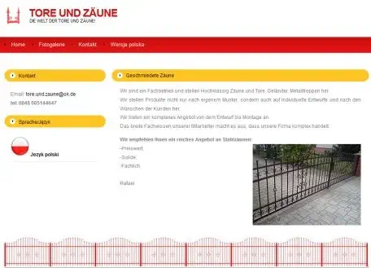
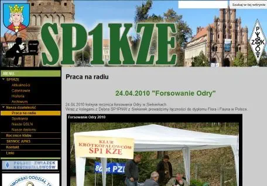
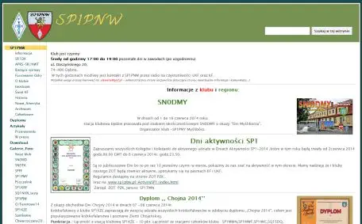

--------- Informacje ---------
---17.04.2023--------
Aktualizacja strony -
rezygnacja z php.
---17.04.2017--------
Zmiana serwera i adresu.
---17.04.2015--------
Wielka rozbudowa strony.
---13.07.2009--------
Zmiana wyglądu strony - optymalizacja.
---06.02.2004--------
Zalążek strony.
Webmastering
Projektowaniem stron zajmuję się od 2000 roku. Wszystkie moje projekty są realizowane
indywidualnie i w większości non profit. Nie jest to moja praca zawodowa, a hobby. Dla
tego mogę sobie pozwolić na długie i skrupulatne "dłubanie w kodzie", przez co strony są
niepowtarzalne.
Potrzebujesz mojej pomocy, chciałbyś jakąś wyjątkową stronę skontaktuj się ze mną.
Przykładowe strony, które zbudowałem:
Strona dwujęzyczna ogrodzenia metalowe

Strona klubu SP1KZEpozniżej i strony klubów SP1PMY / SP1PNW na tym samym moim autorskim "silniku".

Gabinet Psychologiczny i psychoterapeutyczny
EX strona klubu SP1PNW

Sławek SQ1KSM (slawera - 2015r.)